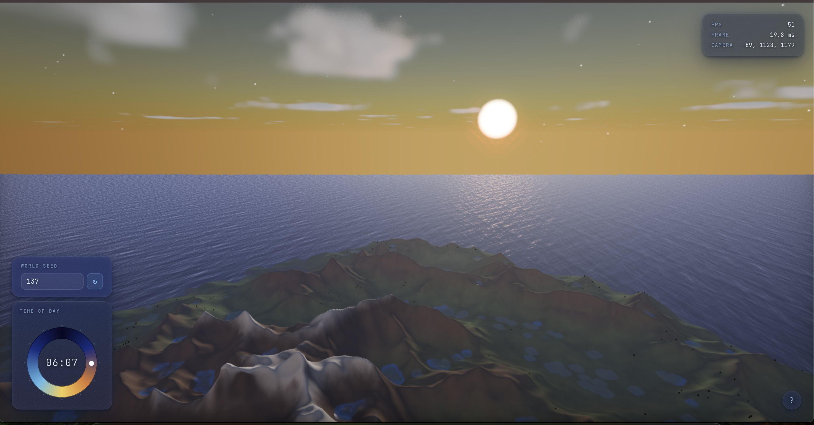
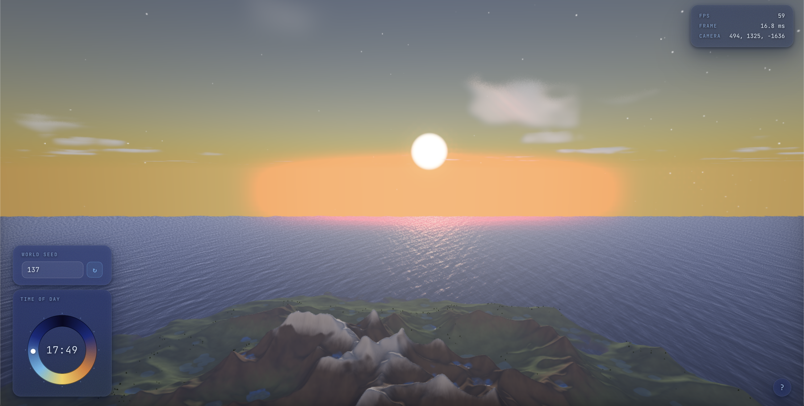
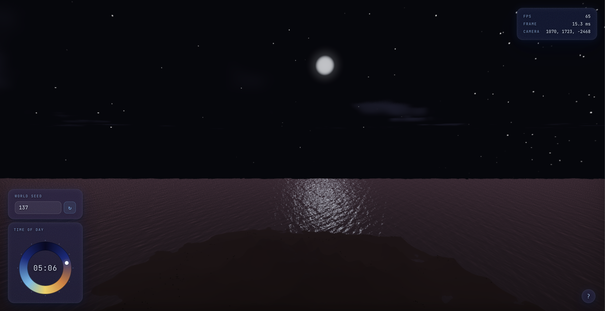
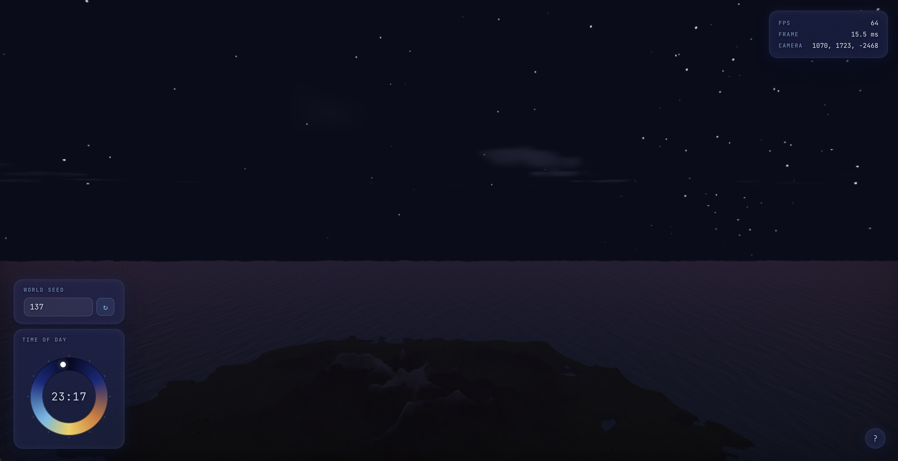
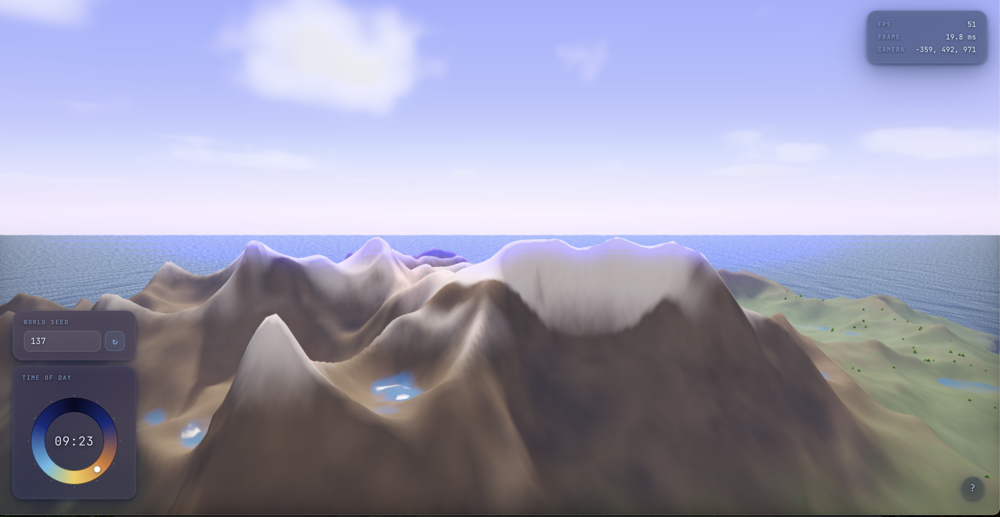
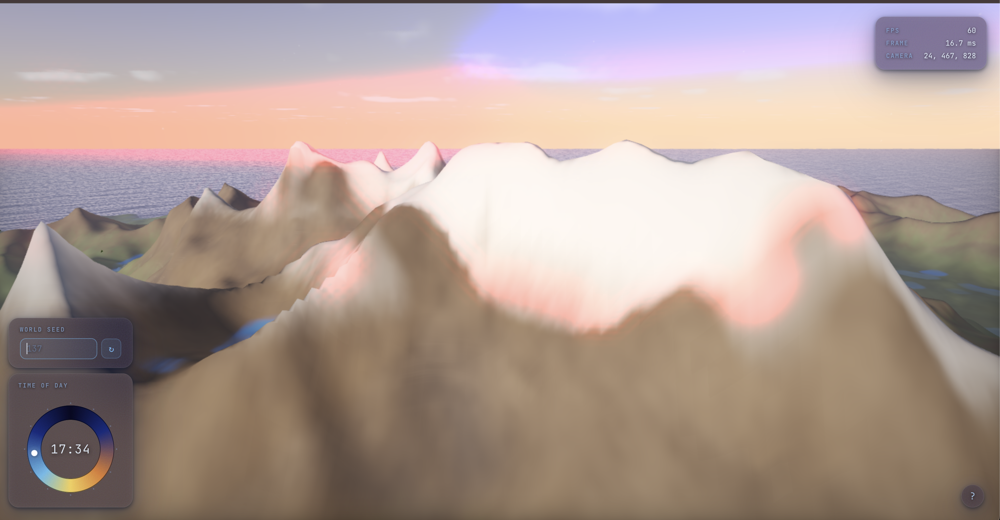

Terra is a real-time, procedurally generated Earth-like planetary renderer built entirely on WebGPU and WGSL, running in a browser with no server-side computation. The system synthesizes a complete natural environment on the GPU with continent-scale terrain shaped by simulated hydraulic erosion, an FFT-driven ocean with a physically derived wave spectrum, volumetric clouds lit by single-scattering, a physically-based atmosphere computed from precomputed transmittance lookup tables, instanced animated vegetation, and a night sky complete with procedurally placed stars, a galactic band, and a moon with limb darkening. A controllable dynamic day-night cycle unifies all these subsystems under a single moving sun/moon direction, and HDR bloom with ACES tone mapping delivers a cinematic final image.
Terra is a fully browser-based 3D procedural world engine built on WebGPU with zero runtime dependencies. The pipeline is divided into an initialization phase (terrain generation, erosion, normal/AO computation, atmosphere LUT precomputation, vegetation placement) and a real-time render loop (ocean FFT, atmosphere, terrain, vegetation, ocean, bloom). All heavy computation runs as GPU compute shaders in WGSL.
The subsections below expand this into a concrete implementation summary: terrain synthesis and erosion, ocean FFT waves, atmosphere and sky (including clouds and flocking birds), then HDR post-processing. Where we deviated from published methods for load time or frame rate, we call that out as a Reference variation note. Citations point to the References list at the end of the report.
Terrain Generation & Erosion
Heightmap synthesis via layered noise functions, with physically-simulated hydraulic erosion, sediment transport, and tectonic uplift.
A 512×512 heightmap uses 7-octave fBm Perlin noise (Perlin, 1985) with domain warping (Quilez) to break grid alignment, plus a radial island falloff and Gaussian blur.
Sobel Normal Estimation — a 3×3 Sobel operator converts heightmap gradients to surface normals with a full 10-level mip chain, computed once at init.
MFD routing (Tarboton, 1997) distributes drainage across all 8 neighbors over 250 iterations.
Stream Power Erosion (Willgoose et al., 1991) carves valleys via dh/dt = −K · Am · (∂h/∂x), with K spatially modulated for rock-layer banding.
Sediment Transport & Deposition — capacity model tc = KT·AM·slope (KT = 0.010) deposits excess sediment at rate 0.08 to fill valleys and form alluvial fans.
Thermal erosion across three intensity zones (KT = 0.025 / 0.010 / 0.012) redistributes material on over-steepened slopes, producing talus fans. Each outer iteration runs 40, 6, and 12 thermal passes respectively.
Uplift / isostatic rebound (rate 0.0003) maintains topographic relief throughout the simulation.
HBAO (Bavoil et al., 2008) ray-marches 8 directions over a 20-texel radius to compute horizon-based ambient occlusion once at init.
Crevice AO — screen-space 4-neighbor height average; ao = clamp(1 − 2.5 · max(0, h_avg − h), 0.4, 1.0) darkens local concavities.
Soft Ray-Marched Shadows (Quilez, 2010) — 50-step march with adaptive step size; penumbra softness scales as min(res, softness · dist / step_dist), clamped to [0.2, 1.0].
Triplanar texturing (GPU Gems 3–style projection) — noise projected on XZ/XY/YZ planes weighted by |N|² eliminates UV stretching on steep slopes.
Vegetation — up to 50,000 grass instances placed by a compute shader (height [0.12–0.28], N·y ≥ 0.75, log drainage ≤ 2.2); crossed-quad blades taper and sway sinusoidally with wind via drawIndexedIndirect.
Ocean
Frequency-domain wave synthesis using the Phillips spectrum with real-time FFT surface reconstruction.
Phillips Wave Spectrum (Tessendorf, 2001) — P(k) = A·exp(−1/(kL)²)/k⁴·(k̂·ŵ)⁶, wind speed 20 m/s, amplitude A = 80, gravity dispersion ω(k) = √(g|k|).
Complex Gaussian Initialization — Box-Muller transform seeds h₀(k) and conjugate h₀*(−k) to guarantee a real-valued surface.
FFT Ocean Surface (Cooley & Tukey, 1965) — radix-2 butterfly IFFT, 128×128, 7 stages with bit-reversal permutation and shared-memory caching.
Fresnel Reflectance (Schlick, 1994) — F = 0.02 + 0.98(1−NdotV)⁵ with foam masking at wave crests.
Reference Variation Note: Only height and slope displacement computed; Gerstner-style choppy horizontal displacement omitted to stay within the 128×128 grid budget.
Atmosphere & Sky
Precomputed transmittance LUT enabling single-scattering Rayleigh and Mie sky rendering, volumetric clouds, and procedural celestial bodies.
Sky rendering follows the precomputed atmospheric scattering approach of Bruneton & Neyret (2008), building a 256×64 transmittance LUT at startup encoding Rayleigh and Mie optical depth over 40 integration steps.
Reference Variation Note: The full Bruneton & Neyret framework precomputes irradiance and in-scatter LUTs for multi-order scattering; we implement only single-scattering with the transmittance LUT for a practical real-time trade-off.
Rayleigh Phase Function (3/16π)(1 + cos²θ) models wavelength-dependent blue-sky scattering.
Henyey-Greenstein (Henyey & Greenstein, 1941) Mie phase function (g = 0.3) is used for atmospheric scattering; the fragment shader ray-marches 16 steps, sampling the LUT for sun transmittance at each step. Bilinear interpolation is performed manually via four textureLoad calls for WebGPU portability.
Sun & moon disks are rendered as analytical disks; the moon adds limb darkening (1 − 0.35(1 − √μ)) and a soft corona glow.
Stars & Milky Way (Quilez) use per-cell hashing in azimuth/altitude space with galactic-latitude density variation, and a three-octave noise band with a galactic-center luminosity boost.
Volumetric clouds are ray-marched between 2200–4500 m using 4-octave value noise, Beer–Lambert transmittance, and a Henyey-Greenstein phase function (g = 0.65 / −0.30) with four shadow-ray probes per sample.
Bird Flocking — orientation-based flocking (Hoetzlein Flock2, 2024) blends desired headings from visible neighbors; 6 forward probes at 320-unit lookahead steer away from terrain via altitude-gradient forces with Hermite blend 180–260 m.
Reference Variation Note: The standard Henyey-Greenstein uses a single lobe; for clouds we use a dual-lobe powder-sugar approximation to reproduce silver-lining and dark-center effects.
Post-Processing
HDR bloom cascade, ACES filmic tone mapping, and 4× MSAA for a cinematic final image.
An HDR bloom pipeline thresholds bright pixels via a soft-knee luminance curve (threshold 0.80, knee 0.30), downsamples through 4 cascade levels with a 2×2 box and cross-tap filter, upsamples with weighted taps, then composites onto the HDR buffer. The full image is tone-mapped with ACES (Academy, 2014) and gamma-corrected (γ = 2.2) before display. 4× MSAA is applied at the render target level.
Problems encountered
How we diagnosed and addressed the main engineering risks.
- Reference fidelity vs. runtime constraints: Several techniques from our references required multi-pass precomputation or runtime dependencies that would have introduced unacceptable load times in a browser with no server backend. We tackled this by scoping each feature to the most impactful subset for real-time use — for example, single-scattering-only atmosphere and height-only ocean displacement — and validating look and stability before adding complexity.
- CPU vs. GPU workload partitioning: Deciding which passes to run on the CPU versus as GPU compute shaders was a recurring challenge. Heightmap generation stayed on the CPU for flexibility, while erosion, AO, normals, and ocean FFT moved to GPU compute shaders. We fixed incorrect intermediate results by carefully ordering dispatches and inserting explicit memory barriers between dependent passes (MFD routing → accumulation → erosion).
- Integration across subsystems: Terrain, ocean, atmosphere, vegetation, birds, and post-processing share a single sun direction and HDR buffer. We isolated failures by toggling subsystems, comparing lighting in isolation vs. combined mode, and tightening depth conventions at the ocean–terrain boundary to remove z-fighting and inconsistent exposure.
Lessons learned
Process and design takeaways from the quarter.
- Design before shader code: Early on, subsystem work started before the team fully cross-referenced papers and agreed on interfaces. That produced redundant work and backtracking. Later, we held short design reviews before merging WGSL changes; that reduced thrash and made integration predictable.
- Measure in the real pipeline: Bugs often appeared only when systems ran together (e.g., HDR bloom interacting with sky exposure). Debugging in the full frame graph, with WebGPU timestamp queries where available, was more reliable than optimizing isolated demos.
- Reference implementations are maps, not mandates: Adapting Bruneton-style LUTs, Tessendorf oceans, and erosion models to WGSL and browser limits required explicit tradeoff notes in code and in this report so future work (or portfolio readers) understand what was simplified and why.
Below: Video of the running system, then still frames from the live WebGPU build. All scenes are procedural in real time in the browser; try the interactive Terra demo.
Screenshots from the interactive WebGPU build:








-
Bruneton, E. & Neyret, F. (2008). Precomputed Atmospheric Scattering.
Computer Graphics Forum (EGSR). — Transmittance LUT + in-scattering formulation used in
atmosphere_precompute.wgslandatmosphere.wgsl. -
Tessendorf, J. (2001). Simulating Ocean Water. SIGGRAPH Course Notes.
— Phillips spectrum and gravity-wave dispersion relation for
ocean_fft.wgsl. - Cooley, J. W. & Tukey, J. W. (1965). An Algorithm for the Machine Calculation of Complex Fourier Series. Mathematics of Computation. — Radix-2 butterfly FFT algorithm implemented in the IFFT compute shader.
-
Tarboton, D. G. (1997). A New Method for the Determination of Flow
Directions and Upslope Areas in Grid Digital Elevation Models. Water Resources Research.
— Multi-Flow Direction (MFD) routing in
erosion.wgsl. - Willgoose, G., Bras, R. L., & Rodriguez-Iturbe, I. (1991). A Coupled Channel Network Growth and Hillslope Evolution Model. Water Resources Research. — Stream Power Erosion model basis.
-
Bavoil, L. et al. (2008). Image-Space Horizon-Based Ambient Occlusion.
SIGGRAPH Talks. — HBAO technique adapted for heightmap-space AO in
ao.wgsl. - Henyey, L. G. & Greenstein, J. L. (1941). Diffuse Radiation in the Galaxy. Astrophysical Journal. — Phase function used for Mie scattering and cloud single-scattering.
- Perlin, K. (1985). An Image Synthesizer. SIGGRAPH Proceedings. — Perlin noise used for heightmap fBm generation and cloud density fields.
- ACES Color Encoding System. Academy of Motion Picture Arts and Sciences, 2014. — Tone mapping curve used throughout the pipeline.
- Schlick, C. (1994). An Inexpensive BRDF Model for Physically-Based Rendering. Graphics Gems IV. — Fresnel approximation in water shading.
- NVIDIA. (2008). GPU Gems 3. Addison-Wesley. — Triplanar-style material blending for procedural terrain shading.
- Hoetzlein, R. (2024). Flock2 orientation-based flocking (reference implementation). — Informed bird steering behavior.
- Quilez, I. Procedural techniques: domain warping, value noise, hash functions. iquilezles.org. — Informed heightmap domain warping and the hash-based star placement scheme.
Work split for grading; each member shipped multiple passes in the repo above.
- Sarvagya Somvanshi: Terrain mesh and materials, vegetation placement and animation, stream power and thermal erosion, cloud look and iteration on ambient lighting.
- Mohan Xu: Ocean rendering and FFT-based waves (Tessendorf / Phillips), bird flocking and interaction with terrain.
- Owen Ye: Atmosphere and sky dome, sun and moon disks, sunrise/sunset lighting, early sky texture passes.
- Afreen Shameem: Initial heightmap / procedural island generation, HDR bloom, ACES tone mapping, MSAA integration.